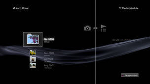

Foto > Verwenden von Wiedergabelisten > Erstellen/Wiedergeben von Wiedergabelisten
Erstellen/Wiedergeben von Wiedergabelisten
Sie können im Systemspeicher gespeicherte Bilder auswählen, in der gewünschten Reihenfolge anordnen und so für die Wiedergabe in einer Wiedergabeliste zusammenstellen.
1. |
Wählen Sie |
|---|---|
2. |
Wählen Sie |
3. |
Wählen Sie eine vorhandene Wiedergabeliste aus und drücken Sie die |
4. |
Wählen Sie [Bearbeiten].  |
5. |
Wählen Sie das Bild, das Sie zur Wiedergabeliste hinzufügen möchten. |
 (Foto) >
(Foto) >  (Wiedergabelisten).
(Wiedergabelisten). (Neue Wiedergabeliste erstellen). Befolgen Sie zum Erstellen der Wiedergabeliste die Anweisungen auf dem Bildschirm.
(Neue Wiedergabeliste erstellen). Befolgen Sie zum Erstellen der Wiedergabeliste die Anweisungen auf dem Bildschirm. -Taste, um die Bearbeitung zu beenden. Eine vorhandene Wiedergabeliste können Sie über
-Taste, um die Bearbeitung zu beenden. Eine vorhandene Wiedergabeliste können Sie über Anmerkungen
- Nur Bilder, die im Systemspeicher gespeichert wurden, können zur Wiedergabeliste hinzugefügt werden.
- Sie können eine Slideshow starten oder ein Bild drucken, während Sie Bilder in einer Wiedergabeliste durchsuchen. Wählen Sie ein Bildsymbol in der Wiedergabeliste aus und drücken Sie die
 -Taste. Wählen Sie [Slideshow] oder [Drucken] aus dem Menü „Optionen“.
-Taste. Wählen Sie [Slideshow] oder [Drucken] aus dem Menü „Optionen“.